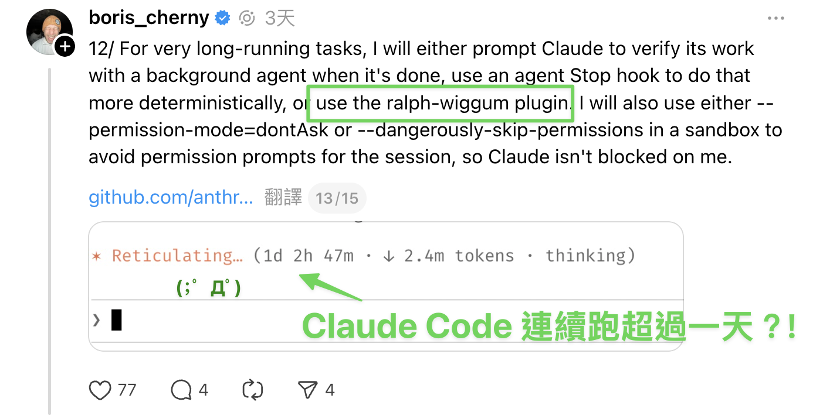
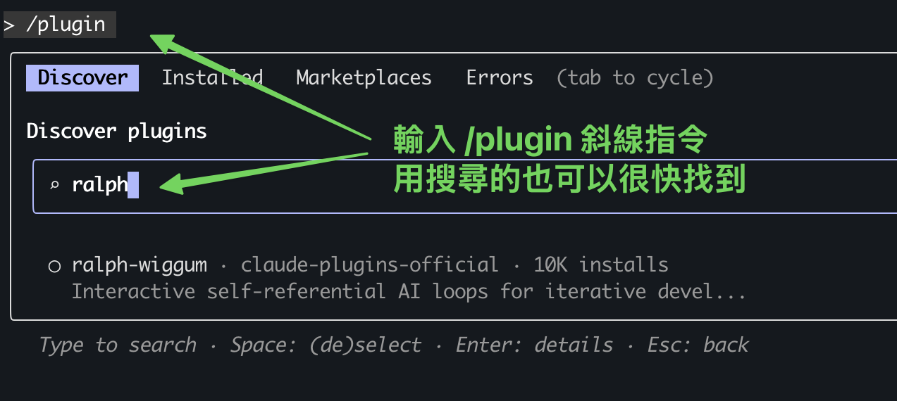

Ralph Wiggum Loop：讓 AI 24 小時自動寫程式
真正的軟體工程專家，絕對會反覆強調人工審查 AI 生成的程式碼有多重要，但一定有些檢查項目（像是單元測試）很繁瑣又花時間，讓你很想全部丟給 AI。夢幻情境會是：你上床睡覺以前給 AI 下了一個任務，隔天早上醒來後，6 個全新的程式庫已經完成、並通過所有測試！
這個夢幻情境已經成真了！Claude Code 創造者 Boris Cherny 親自分享了他的 AI 實際用法，透過 Ralph Wiggum Loop，就能達成這樣的體驗。
本文會介紹 Claude Code 裡的 Ralph Wiggum Plugin 外掛是什麼、以及怎麼使用。
（本文會混用 Plugin、外掛、Loop、方法、技術等關鍵詞來稱呼 Ralph Wiggum，講的都是同一個 Claude Code Plugin）
Claude Code 元老就是這麼做
Boris Cherny 是 Claude Code 創辦者之一，他在 X.com 的分享 中，提到他本人的使用數據：
「在過去 30 天內，我完成了 259 個 Pull Requests、新增 40,000 行程式碼 **每一行都是由 Claude Code + Opus 4.5 撰寫的。」
「Claude 能夠持續運作數分鐘、數小時，甚至數天（使用 Stop hooks）。 軟體工程正在改變，我們正進入程式設計歷史的嶄新時代。」
過去這陣子真的經歷了很大的轉變，在 2024 年底，Claude 還在為產生 bash 指令時的跳脫字元問題掙扎，只能運作幾秒或幾分鐘。而到了今天的 2026 年開頭，它已經能夠連續工作數天，完成整個專案的開發。
也正是「Claude 連續運作數天」這一句，引起我的興趣。
Boris 在 Threads 上 分享的 Claude Code 使用技巧，明確提到他使用的是 Ralph Wiggum 外掛 來執行要跑超久的任務。

（截圖：Boris 的 Threads 貼文）
他更分享了實戰案例：在 Y Combinator 黑客松，Ralph Wiggum 外掛一夜之間產出了 6 個順利可用的程式庫；另個案例是一位聰明的工程師在學會 Ralph Wiggum 技術後，用來外包接案，以 297 美元的 API 成本完成了一個價值 50,000 美元的合約。
Ralph Wiggum Loop 的創始者是誰？不是 Claude Code！
Ralph Wiggum Loop 方法的創始者是 Geoffrey Huntley。他創立此方法是為了克服 AI Agent 常見的「偷懶」問題。即 AI 在處理複雜任務（如建構後端或除錯）時，往往寫了幾行程式碼或忽略了錯誤，就自信地宣稱任務已完成並過早退出對話。
Huntley 的工作哲學核心在於「迭代進步比完美更重要」(Iteration > Perfection)。他認為在 AI 開發中，失敗經驗都是訓練數據（Failures are data），那些決定論式的錯誤（Deterministically bad，換言之，_非_隨機的錯誤）其實是極具價值的資訊，能引導開發者像在幫樂器調音一樣不斷微調提示詞。他強調開發者必須具備強大的信念，相信「最終一致性」(Eventual Consistency)，即透過 AI 頑固且不間斷的自我修正循環，最終一定能達成正確的目標狀態。
Huntley 在建立 CURSED 語言的過程中提到：
「建造軟體需要極大的信念和對最終一致性的相信。Ralph 會考驗你。每次 Ralph 在建立 CURSED 時走錯方向，我都沒有責怪工具；相反地，我審視自己。每次 Ralph 做了壞事，我就調整 Ralph，就像幫吉他調音一樣。」
所以，Ralph Wiggum 究竟是什麼厲害的方法？我們從「為什麼」需要它的緣由開始談。
問題：AI 代理會「偷懶」？
大多數的 AI 輔助開發，會像是雇用了一個會偷懶的實習生，你必須不斷地追蹤進度、指出錯誤，這反而是增加了管理成本。惱人的情況包括：
- 提早結束：例如 AI 在建立後端系統時，可能只寫了幾個檔案、忽略了資料庫架構，就自信地宣稱任務完成
- 成功的幻覺：為了節省 Token、或單純認為自己做完了，AI 會產生「已經成功」的_幻覺_，導致你必須花時間手動檢查、並提醒它修復遺漏的細節
- 缺乏自我修正：一旦對話結束，AI 就不會再主動檢查之前的錯誤，除非你再次介入
解決方案：逼 AI 堅持下去
Ralph Wiggum Loop 的核心概念是：不讓 AI 輕易退出，直到任務真正完成。
它透過 Claude Code 的 Stop Hook 機制來實現：
- 當 Claude 完成工作、並嘗試結束對話時，Stop Hook 會攔截這個退出動作
- 檢查輸出內容是否包含你事先定義的「完成承諾」（例如
DONE或FIXED） - 如果沒找到，就把相同的提示詞重新餵回給 Claude
- Claude 會讀取之前的執行記錄、發現錯誤（例如測試失敗），然後在_新的迴圈_中嘗試改進程式碼
- 持續這個過程，直到真正完成工作（或者達到事先設定的最大迭代次數）
趣味命名：為什麼叫 Ralph Wiggum？
Ralph Wiggum 這個名稱來自《辛普森家庭》中的角色，他是一個天真、經常做傻事、卻又異常執著的小男孩。
《辛普森家庭》的角色 Ralph Wiggum
Ralph 在劇中的有趣台詞之一是：
Me fail English? That's unpossible!
（我英文不及格？那不可能啦！）
這種「即使失敗也堅持下去」的精神，完美體現了這個 Ralph Wiggum 這個方法的核心理念。
就像 Ralph 這個角色雖然常出錯、甚至是糟糕到很明顯，卻能透過不斷的迭代與改進，最終達成目標。這正是 AI 開發需要的模式：在一個不確定的世界中，透過_可預測的失敗模式_來達成最終的成功。
Ralph Wiggum Loop 到底是什麼？如何運作？
核心定義
Ralph Wiggum Loop（也稱為 Ralph Loop）是一種強制 AI 堅持下去（Force Persistence）的迭代開發方法論。Ralph 最原始的形式，單純是一個 Bash 迴圈：
while :; do
cat PROMPT.md | npx --yes @sourcegraph/amp
done
而在 Claude Code 中，它優雅地被實作為一個外掛（Plugin），利用 Stop Hook 機制在單一 session 內部建立自我參照的回饋迴圈。
用一個簡單的比喻來說，Ralph Loop 是不讓 AI 員工下班的血汗工廠，Ralph Loop 給 AI 員工一間「除非事情做完、否則門會鎖死」的辦公室。它可能要嘗試 10 次、20 次才會做對，但最後一定會拿著正確的成果（DONE）出來見你。這個機制確保 AI 不會偷懶提早下班，而是會持續工作直到任務真正完成。
沒做完不能走，真的血汗
運作原理
讓我們來認識 Ralph Loop 的完整運作流程，如同上方文章所述，它是一個不斷使用相同提示詞的 Bash 迴圈（Loop）：
1. 初始化
/ralph-loop "建立 REST API 並通過所有測試" --completion-promise "DONE" --max-iterations 20
你只需執行一次指令，然後 Claude Code 會：
- 接收任務描述
- 開始第一次嘗試
- 啟動 Stop Hook 監控
2. 迭代迴圈
3. 自我修正
這是 Ralph Loop 最神奇的地方：雖然提示詞不變，但環境狀態會改變。
- 第 1 次迭代：Claude 寫了程式碼，但測試失敗
- 第 2 次迭代：Claude 看到測試失敗的輸出，修改程式碼
- 第 3 次迭代：Claude 看到新的錯誤訊息，繼續調整
- …
- 第 N 次迭代：所有測試通過，輸出
DONE，迴圈結束
每次迭代中，Claude 都能看到：
- 已修改的檔案內容
- Git 歷史記錄
- 測試執行結果
- 錯誤訊息
這讓它能夠基於實際的執行結果來改進程式碼，而不是憑空猜測。
你想嘛，要是每次環境跟 context 都不變、只是執行相同提示詞
不就只是燒錢浪費 token 在做同一件事嗎？
表格整理：Ralph Wiggum Loop 的特徵
| 典型 AI 輔助開發 | Ralph Wiggum Loop |
|---|---|
| 一次性嘗試，成功與否都結束 | 持續嘗試直到成功 |
| 需要人工追蹤進度 | 自動追蹤並修正 |
| 錯誤需要人工餵回 | 自動讀取錯誤並改進 |
| 適合簡單任務 | 適合複雜長期任務 |
| 無法離線工作 | 可以掛機執行 |
Ralph Wiggum Loop 快速開始指南
安裝與設定
步驟 1：安裝 Plugin
/plugin install ralph-loop@anthropics
（官方外掛連結）

也可以在 Claude Code 內直接用 /plugin 指令搜尋到這個外掛
步驟 2：啟動你的第一個 Ralph Loop
/ralph-loop "請寫一個 Python 計算機模組，包含加減乘除功能和完整測試" \
--completion-promise "COMPLETE" \
--max-iterations 15
關鍵參數說明
--completion-promise：定義一個代表「完工」的關鍵字（如DONE、COMPLETE、FIXED），當 Claude 輸出此字串時，迴圈才會停止--max-iterations：最大迭代次數限制，設個上限作為安全網，防止 AI 陷入無限迴圈並消耗過多 Token 成本。也就是在防止你的帳單大爆炸，因此強烈建議設定！
撰寫有效的 Prompt
✅ 好的 Prompt 範例
建立一個 REST API 用於待辦事項管理
需求：
- CRUD 端點（GET、POST、PUT、DELETE）
- 輸入驗證
- SQLite 資料庫
- pytest 測試（覆蓋率 > 80%）
- README 文件
完成標準：
- 所有測試通過
- Linter 無錯誤
- API 文件完整
- 輸出：<promise>COMPLETE</promise>
把完成標準寫清楚是運用 Ralph Loop 最重要的關鍵，下方文章會再講更多。
❌ 不好的 Prompt 範例
建立一個待辦事項 API，讓它好用一點
何時該使用 Ralph Wiggum Loop？
最適合的使用場景
1. 測試驅動開發（TDD）
TDD 適合 Ralph Loop 執行，因為測試結果是明確的二元狀態（通過 vs. 失敗），AI 可以自動且清楚地判斷、並改進。TDD 是 Ralph Loop 最強大的使用場景。
/ralph-loop "實作使用者認證模組：
1. 撰寫測試以建立失敗標準
2. 實作功能讓測試通過
3. 重構程式碼
4. 重複，直到所有測試通過且覆蓋率 > 90%
完成時輸出 DONE" --max-iterations 30
2. 複雜 Bug 修復
適合當 Bug 的成因明確但修復路徑複雜時。
/ralph-loop "修復付款處理模組中的稅金計算錯誤：
- 重現 Bug
- 分析根本原因
- 實作修復
- 確保回歸測試全部通過
- 新增防止此類錯誤的測試
完成時輸出 FIXED" --max-iterations 20
3. 大規模重構
適合處理需要數小時才能完成的系統遷移。
/ralph-loop "將資料庫從 MySQL 遷移到 PostgreSQL：
- 更新所有 ORM 模型
- 修改查詢語法
- 更新測試
- 確保所有現有功能正常運作
完成時輸出 MIGRATED" --max-iterations 50
4. 自動化開發
當你需要「放手」讓 AI 在深夜或週末自動處理全新專案（Greenfield Project）時：
# 睡前執行
/ralph-loop "建立電子商務後端 API：
Phase 1: 使用者認證（JWT、測試）
Phase 2: 產品目錄（列表/搜尋、測試）
Phase 3: 購物車（新增/移除、測試）
所有階段完成後輸出 ECOMMERCE-COMPLETE" --max-iterations 100
如何判斷是否該使用？
使用以下檢查清單來決定：
☑ 成功標準是否可由機器判定？
- 可以：編譯成功、Linter 無錯誤、測試 100% 通過
- 不可以：「讓頁面變漂亮」、「最佳化使用者體驗」
☑ 任務是否能接受迭代花費的成本？
- 如果你追求最終結果產出穩定、符合客觀標準，而非一次到位
- 願意支付多輪 API 呼叫的費用以換取自動化結果
小心會燒錢啊
☑ 你能否能精確定義 DONE 的狀態？
- 可以：「所有測試通過且 coverage > 80%」
- 不可以：「大致完成就好」
重要警告與限制
⚠️ 必須設定 --max-iterations
這是最重要的安全網。若不設定，AI 可能陷入無限迴圈，導致高昂的 API 費用。
簡單任務可以設定 10~20 次，大型專案可以大膽點設定 50~100 次。
⚠️ Prompt 中應說明「卡住了」該怎麼辦
Claude Code 也不是所有問題開了無限迴圈就一定能解決，為了防止 AI 在無法解決問題時陷入（無效的）無限循環，我們要設定 Stuck Handling Prompt，在提示詞中預先加入「逃生計畫」（Escape Hatch），確保在失敗時仍能提供有價值的回饋。
若嘗試 15 次後仍未完成：
- 記錄阻礙進度的問題
- 建議替代方案
- 輸出 BLOCKED 並說明原因
⚠️ --completion-promise 要精確
此參數會是精確字串比對，因此：
- ✅ 確保 Prompt 指示 AI 輸出完全一致的關鍵字
- ❌ 無法用於多種完成條件（如
SUCCESSvs.BLOCKED） - ✅ 務必搭配
--max-iterations作為主要安全機制
最不適合使用的場景
❌ 需要人類判斷、或者（主觀）審美標準
廣義地說，任何無法透過程式自動檢測驗證的任務都不適合 Ralph Loop。例如「漂亮」無法由程式自動驗證，AI 會隨意猜測並立即宣稱完成。
# 不良示範
/ralph-loop "讓首頁變漂亮" --completion-promise "DONE"
❌ 追求即時結果的單次操作
如果你需要馬上看到結果並進行互動，傳統的聊天模式更有效率。
❌ 生產環境（Production）不該用！
在生產環境中應使用目標明確的 debug 除錯，千萬不要放任 AI 在迴圈中隨意修改 PROD 裡的關鍵基礎設施。
❌ 需要外部審批或人工干預
如果流程中途需要你點頭同意，Ralph 的自動迴圈優勢就會消失。
結語
Ralph Wiggum Loop 體現了幾個關鍵原則：
- 確定性失敗：在不確定的世界中可預測地失敗
- 持續勝於完美：不追求一次到位，而是透過迭代達到最終一致性
- 人機協作：允許人工介入調整，但不依賴持續監督
這個技術的成功關鍵在於給 AI 明確的成功標準、自動化的驗證機制（如測試），以及足夠的迭代空間。我覺得 Ralph Loop 跟 Machine Learning 的工作流很像，成功關鍵都是要定義好測試標準（Evaluation Metric）、然後讓程式在每次迭代中學習。
現在，相信你已經了解 Ralph Wiggum Loop 的完整概念。親自試試看吧：
- 安裝插件：
/plugin install ralph-loop@anthropics - 設定一個明確的任務與完成標準
- 設定合理的
--max-iterations限制 - 啟動迴圈，然後放心地去喝杯咖啡
然後想想 Ralph 掛在嘴上的：「I'm learnding!」，期待你的 AI 代理也能在持續的迭代中，真正學會如何完成任務。
參考資料：
- Claude Code 官方 Ralph Wiggum 外掛
- Geoffrey Huntley：Ralph is a Bash Loop
- Ralph Orchestrator：由社群開發的進階工具，可協調多個 Ralph Loops
- 來自 Y Combinator 的成功案例：記錄了開發者如何利用 Ralph 循環在一個晚上自動交付 6 個專案倉庫的傳奇經歷
如果這篇文章有幫助到你，歡迎追蹤好豪的 Facebook 粉絲專頁、Instagram 與 Threads 帳號，我會持續分享我學習 Claude Code 與 AI 的心得；也可以點選下方按鈕，分享給同樣在追蹤 AI 趨勢的朋友們。